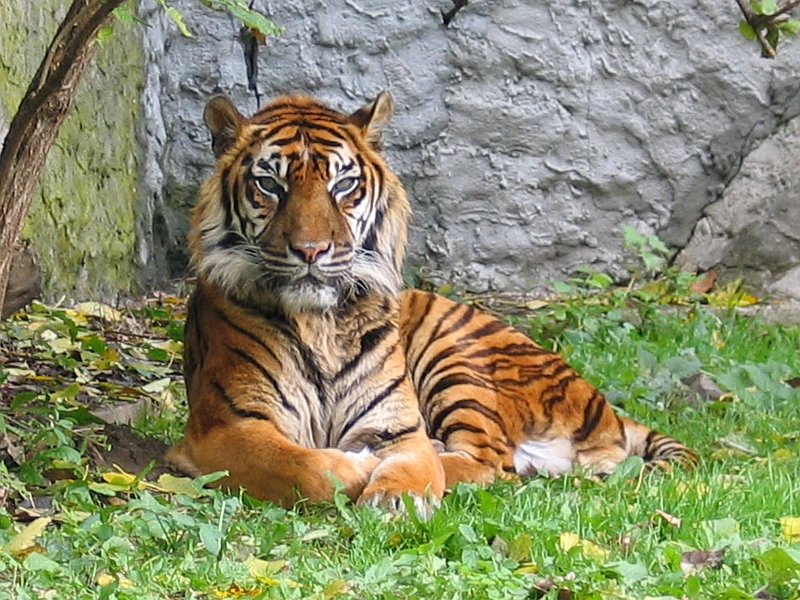

The tiger (Panthera tigris) is the largest living cat species and a member of the genus Panthera. It is most recognisable for its dark vertical stripes on orange-brown fur with a lighter underside. It is an apex predator, primarily preying on ungulates such as deer and wild boar. It is territorial and generally a solitary but social predator, requiring large contiguous areas of habitat, which support its requirements for prey and rearing of its offspring. Tiger cubs stay with their mother for about two years, before they become independent and leave their mother's home range to establish their own.
The tiger is among the most recognisable and popular of the world's charismatic megafauna. It featured prominently in the ancient mythology and folklore of cultures throughout its historic range, and continues to be depicted in modern films and literature, appearing on many flags, coats of arms and as mascots for sporting teams. The tiger is the national animal of India, Bangladesh, Malaysia and South Korea.
The tiger has a muscular body with powerful forelimbs, a large head and a tail that is about half the length of its body. Its pelage is dense and heavy, and colouration varies between shades of orange and brown with white ventral areas and distinctive vertical black stripes that are unique in each individual.[51][24] Stripes are likely advantageous for camouflage in vegetation such as long grass with strong vertical patterns of light and shade.[52][53] The tiger is one of only a few striped cat species; it is not known why spotted patterns and rosettes are the more common camouflage pattern among felids.[54] The orangish colour may also aid in camouflage as the tiger's prey are dichromats, and thus may perceive the cat as green and blended in with the vegetation.[55]